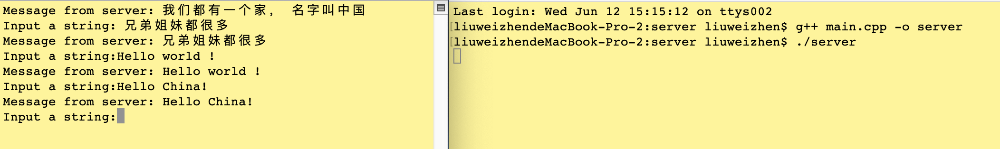

server持续监听client
这里展示了Windows环境下让服务器端持续监听客户端的请求的代码示例，我在下面写一个Mac环境下(Linux通用)代码
Server端
#include <iostream>
#include <stdlib.h>
#include <sys/socket.h>
#include <netinet/in.h>
#include <arpa/inet.h>
#include <unistd.h>
#define BUF_SIZE 100
int main(int argc, const char * argv[]) {
// 创建套接字
int serv_sock = socket(AF_INET, SOCK_STREAM, IPPROTO_TCP);
// 绑定IP, 端口
struct sockaddr_in serv_addr;
memset(&serv_addr, 0, sizeof(serv_addr));
serv_addr.sin_family = AF_INET;
serv_addr.sin_addr.s_addr = inet_addr("30.16.104.105");
serv_addr.sin_port = htons(1234);
bind(serv_sock, (const struct sockaddr *)&serv_addr, sizeof(serv_addr));
// 进入监听状态
listen(serv_sock, 20);
// 接收客户端请求
struct sockaddr_in clnt_addr;
socklen_t clnt_addr_size = sizeof(clnt_addr);
char buffer[BUF_SIZE] = {0}; // 缓冲区
while (1) {
int clnt_sock = accept(serv_sock, (struct sockaddr *)&clnt_addr, &clnt_addr_size);
size_t length = BUF_SIZE;
ssize_t strLen = recv(clnt_sock, buffer, length, 0); //接收客户端发来的数据
send(clnt_sock, buffer, strLen, 0); // 将数据原样返回
close(clnt_sock);
memset(buffer, 0, BUF_SIZE);
}
close(serv_sock); // Code will never be executed
return 0;
}
Client端
#include <iostream>
#include <stdlib.h>
#include <unistd.h>
#include <arpa/inet.h>
#include <sys/socket.h>
#define BUF_SIZE 100
int main(int argc, const char * argv[]) {
// 向服务器发起请求
struct sockaddr_in serv_addr;
memset(&serv_addr, 0, sizeof(serv_addr));
serv_addr.sin_family = AF_INET;
serv_addr.sin_addr.s_addr = inet_addr("30.16.104.105");
serv_addr.sin_port = htons(1234);
char bufSend[BUF_SIZE] = {0};
char bufRecv[BUF_SIZE] = {0};
while (1) {
int sock = socket(AF_INET, SOCK_STREAM, IPPROTO_TCP);
int flag = connect(sock, (struct sockaddr*)&serv_addr, sizeof(serv_addr));
if (flag == 0) {
// printf("success connect to server\n");
}
else {
printf("fail connect to server\n");
}
printf("Input a string:");
// scanf("%s", bufSend);
gets(bufSend); // 支持空格输入
send(sock, bufSend, strlen(bufSend), 0);
recv(sock, bufRecv, BUF_SIZE, 0); // 接收服务器传回的数据
printf("Message from server: %s\n", bufRecv);
memset(bufSend, 0, BUF_SIZE); //重置缓冲区
memset(bufRecv, 0, BUF_SIZE); //重置缓冲区
close(sock);
}
return 0;
}
